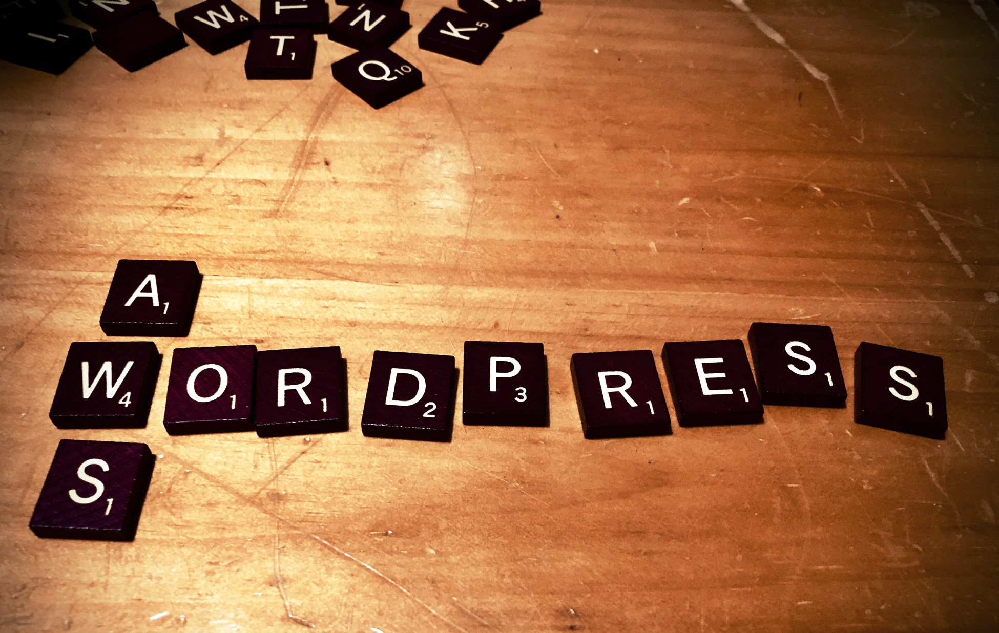
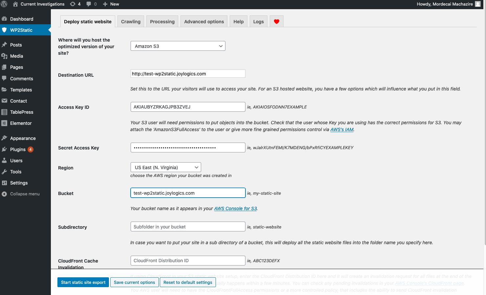

AWS and WordPress can go together well
Many people are using WordPress today to host websites that are primarily static. These are websites such as blogs that basically contain static content. Such a website just needs to be updated when, e.g., a new article is written.
Today, static websites can be hosted in very cost-effective solutions like AWS S3 and GitHub Pages.
Using one of these services to host your website (instead of WordPress) will very likely:
But WordPress is still a great way to actually create a website! This article is for those people who like the ease of creating websites via WordPress but wants the benefit of hosting their websites in AWS S3.
Recently, I decided to sign up as an ‘expert’ on AWS IQ - it’s a way for AWS customers to connect with third party consultants who are AWS experts.
There, I met Mordecai Machazire, an impressive medical student, who is striving to learn data science. He had used AWS to provision an EC2 instance loaded with WordPress. And he in turn used WordPress to create a website with static content and had hosted it there.
The question he posed to me: “why is my simple website costing me $9 a month?”
Well, there are several ways to reduce the cost of hosting a website via WordPress:
But with any of these solutions, you’re still paying for idle compute.
This is the precise scenario where just saving the site as a “static website” and hosting it on S3 will reduce the cost to below $1/month range. Additionally you will get the benefits I’ve outlined above.
After a quick Google search, I came across a nice WordPress plugin called WP2Static that can save a WordPress site as a static wite. And so with Mordecai’s permission, I’ve decided to put together this article.
Here’s the high-level workflow for “having your cake and eat it too.”
I.e., use WordPress, but host the website for low price.
And be sure to stop the EC2 instance when not actively using WordPress for building/updating the website!
For more details, I’ve also put together a walk-through below.
Note that this solution is not for those people using WordPress to host sites that needs dynamism.
For example, if you’re hosting a forum where users are uploading their own content, then you do not have a static website.
While many modern websites have a separation of static content and dynamic content (which are hosted separately), architecting a website this way is well beyond the scope of this article.
If you don’t already have one - AWS makes this easy.
You’ll want to host your website on a domain you like - e.g., http://www.my-fantastic-static-website.com. First, purchase/register that domain either on AWS or elsewhere. Then configure Route53 as your DNS service.
I’ve created a CloudFormation template (open-sourced) to simplify this step. You can find it here Note there is a launcher (i.e., “launch CloudFormation” button) you can use to launch this template in your AWS console.
This will create a bucket with a name which matches your website (e.g., “www.my-fantastic-static-website.com”). It will also create an IAM user for uploading the content from WordPress to S3. Note - you’ll need the credentials in the output section of the CloudFormation to provide wp2static later.
At this point you can point your web browser to the specified URL to verify that the URL is reachable. You should get a 404 error however, since there is no content in that website as yet.
There are several walk-throughs for doing this. One easy way is to (again) leverage CloudFormation. AWS has a sample template they’ve open-sourced here. I’ve copied it into my repository and placed a launcher for it here.
Note you’ll need to create a key pair in AWS first.
Here are the steps:
I’m hardly the expert on actually using WordPress to build your website. But I know there are many plugins that make this simple. In particular elementor seems quite popular, and this is in fact the one that Mordecai had used.
Now, deploy to the S3 website using w2static. Go to the WP2Static tab in the WordPress admin site, then select “Deploy static website” tab in the top. Fill in the information in the UI using the information you’ve captured from the steps above. Here’s an example screen shot:  Now, when you click on “Start static site export”, the plugin will do all the heavy lifting of saving the site in S3. When it’s completed, click on “Go to my deployed site” to verify that your site is indeed live.
Note if you hit an error and have to repeat this step, you may have to delete the deploy cache. Otherwise, wp2static will only push the files that it thinks it has not already uploaded.
To do this, go to the “Advanced Options” tab under wp2static. Click on “Delete deploy cache”, wait for it to complete, then try the deploy to S3 again.
Once you are happy with the website, make sure to stop the EC2 instance!
Just navigate to the EC2 dashboard on the AWS console, find the EC2 instance you’ve used, and stop (not terminate) the instance. This effectively powers down that server, while the data is still on the associated EBS volume. When it’s time to update the website again, return to the dashboard and start the instance. (Note the public IP address will likely change.)
I’ll note here several additional things you can (should) do related to this workflow. I’m only going to sketch out these solutions. A little googling should get you the necessary details.
I did not explicitly mention it, but it is a good idea to periodically backup the WordPress EC2 instance. This will allow you to, e.g., restore to a previous point in time. That might come in handy if you end up making a lot of changes to the WordPress site that you want to roll back.
You can manually take an EBS Snapshot of the EC2 instance’s EBS volume, or create an AMI of the EC2 instance. The best time to do this each time you stop the EC2 instance, since there is no worry of the volume not having unflushed data.
Alternatively, you can automate the backup process. There are two easy (and cost efficient) ways to do this:
There are several third party solutions as well, but these are costlier and I would not recommend them for a simple workload like this.
You may have noticed is that the above steps create a static website with the “http” URL, and not “https”. The latter requires an SSL certificate to be provisioned. The “AWS way” to do this is by provisioning a CloudFront distribution.
CloudFront is a CDN (content delivery network) solution, and so t can also improve the website’s performance.
For this, you would provision a certificate for your domain via ACM (Amazon Certificate Manager), create a CloudFront distribution, and set the S3 bucket as the “Origin” for your distribution. You’ll have to change the DNS record for the website to point to the CloudFront distribution as well.
If you are provisioning a website which is getting a lot of traffic, you probably want to create a separate website to stage your updates. To do this, simply run the CloudFormation template again, but this time using a different subdomain (e.g., “staging.my-fantastic-static-website.com”).
Use the wp2static again to deploy to this website, and once you are happy with the updates, you can deploy to the “production” site. (Note you’ll definitely want to clear the ‘deploy cache’ when you do this as mentioned above.)
As mentioned before, static website means there is no server to, e.g., upload the user content to. This means that user interaction components such as Forms and Comments will not work - if they are based on WordPress.
There are several external solutions that give a way for static website to still implement Forms and Comments. For example, my blog site (which is static) uses formspree to allow readers to contact me.
As for Comments, here is a good overview of various ways you can use.
Sometimes you want to create sections of your website that require login. This is well beyond the scope of this article, but this is possible by using CloudFront and creating a Lambda@Edge function that integrates with an Identity Provider (e.g., Cognito).
For those readers where even running an EC2 instance for a few hours per update is too much, there are other options to run the temporary WordPress server.
Instead of an EC2 instance (a virtual machine node), you can use a VPS (virtual private server) where you are sharing the underlying resources with other “tenants”. Amazon’s VPS solution is called Lightsail and WordPress is in fact a common usecase.
If you’re more technically inclined, you can also spin up a WordPress Docker Container in ECS/Fargate.
And finally - you can always just install and run WordPress on your laptop (or desktop)! There are several guides for installing WordPress on your laptop. Keep in mind, though, this may become somewhat complicated if you decide to create and maintain multiple websites this way.